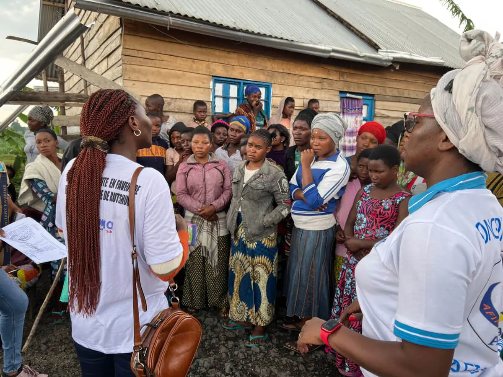
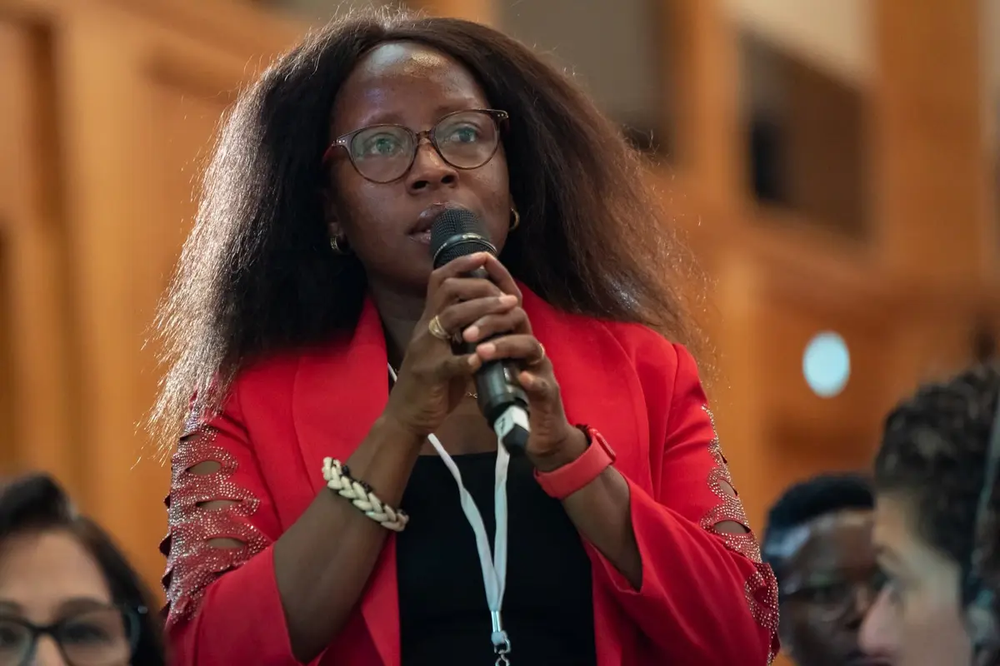
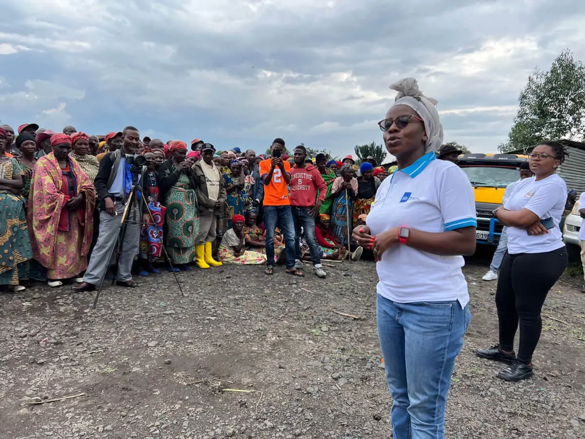

Women’s Peace & Humanitarian Fund · République démocratique du Congo
Financer le leadership local.
Rendre l’impact visible.
Une plateforme interactive pour explorer les investissements, les organisations partenaires et la couverture géographique du portefeuille WPHF accompagné par ONU Femmes.
17partenaires locaux
1,76 M$budget consolidé
3provinces couvertes
300 k$mobilisés pour Ebola
Photo illustrative : © ONU Femmes / Catianne Tijerina · source WPHF
01Financement localiséDes ressources confiées à des organisations proches des communautés.
02Capacités durablesDes investissements institutionnels qui renforcent la qualité et la pérennité.
03Réponse adaptativeUne capacité d’ajustement face aux urgences, dont la prévention et la réponse à Ebola.
Portefeuille en données
Une lecture dynamique, du financement au territoire
Filtrez les projets pour comprendre qui agit, où, sur quelles priorités et avec quels volumes financiers.
Couverture géographique
Investissements par province
Allocation
Budget par thématique
Géographie
Budget par province
Mise en œuvre
Répartition par statut
Portefeuilles
Répartition par Outcome
La valeur ajoutée d’ONU Femmes
Transformer un fonds en capacités, protection et paix
Le portefeuille montre une approche intégrée : financer l’action locale, consolider les organisations et adapter les interventions aux chocs.
Porter les acteurs locaux au premier plan
17 partenaires figurent dans le portefeuille consolidé pour agir au plus près des femmes et des filles.
Renforcer l’institutionnel
8 projets investissent dans la gouvernance, les outils, les compétences et la viabilité des organisations.
Relier humanitaire et développement
Protection, consolidation de la paix, relèvement et résilience se combinent dans les mêmes territoires fragiles.
Adapter rapidement la réponse
300 k$ sont identifiés pour la prévention et la réponse à Ebola au sein des projets concernés.

Protection
Des mécanismes plus proches des femmes et des filles
—
Paix & relèvement
Faire des femmes des actrices centrales de la cohésion
—
Capacités
Construire des organisations solides et durables
—Réseau de partenaires
Les organisations qui portent l’action
Chaque fiche relie l’organisation, le projet, la province, la thématique et le financement associé.
Transparence des données
Des chiffres traçables, une lecture responsable
La plateforme consolide les portefeuilles WPHF DRC Outcomes 5 et 6. Les libellés sources sont conservés, tandis que les provinces et thématiques sont harmonisées pour permettre les comparaisons.
- Une ligne correspond à un projet et à un partenaire principal.
- Les localisations multiples sont ventilées sans dupliquer les budgets dans les totaux.
- Les montants sont présentés en dollars des États-Unis selon la convention contextuelle WPHF, la devise n’étant pas explicitement indiquée dans les fichiers sources.
- Les données décrivent les allocations et la couverture ; elles ne constituent pas encore une mesure d’impact auprès des bénéficiaires.
Investir dans les femmes. Investir dans la paix.